Aww. Last park of the trip. I know it's a bummer that it's this soon since this trip was much quicker than past trips. But hey. We're finishing at one of the few Six Flags parks I hadn't visited.
YAY!!! We made it to Six Flags Over Georgia!!! =)
"Hey you! Come hop the fence and retreive your hat. Don't worry. Nothing will happen."
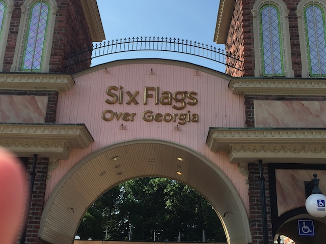
And in more good news, Six Flags Over Georgia is one of the best parks in the chain. And considering how I only have two more Six Flags parks left to visit, that's saying something. =)
"Crap! We teleported back to Six Flags Magic Mountain! NO!!! I DON'T WANT TO GO HOME YET!!!"
Hmm. Where should we go first?
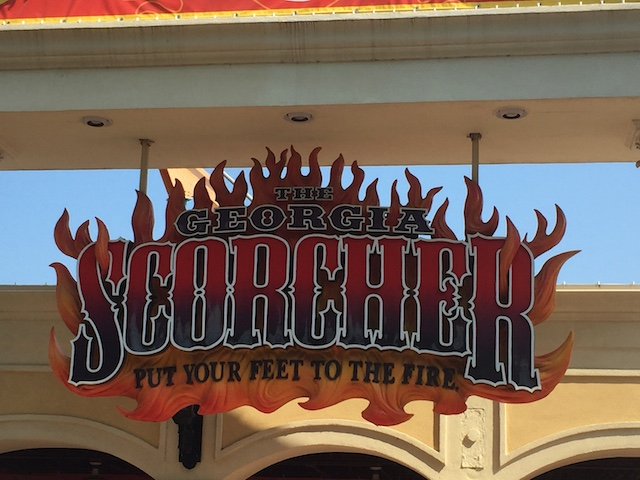
Oh, I know. Lets start out with Georgia Scorcher.
OK. I really like Six Flags Over Georgia. The only problem I had with the park were the operations for Georgia Scorcher. Seriously guys. The one train operations are not cool. Especially on B&M Stand Ups, which are a pain in the ass to load. That is not acceptable.
I know you might not think much of Georgia Scorcher since its dwarfed by Goliath, but this ride is freaking awesome!
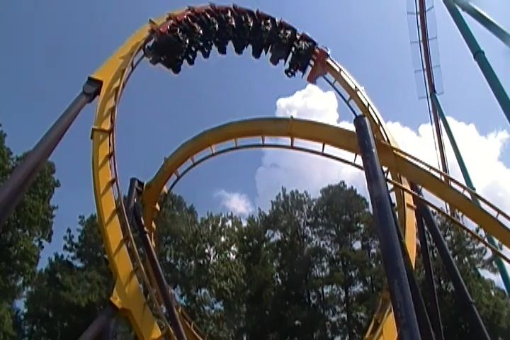
Seriously, this thing is almost like a Stand Up Batman the Ride. I just love it. It's the only stand up that comes close to Riddlers Revenge (that's still my favorite, but Georgia Scorcher is a close 2nd).
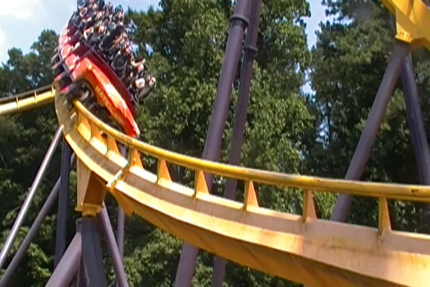
This is the ride that Iron Wolf and both Vortexes should be.
OK. Dare Devil Dive opened up. Gotta get on it before the line grows insanely long.
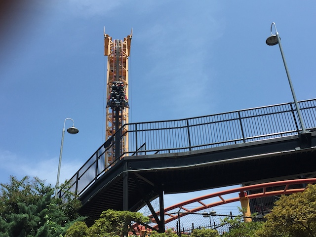
Hey. I'm just happy that they run this ride with only lap bars.
It's a fun ride and all, but it's far from the best Euro Fighter.
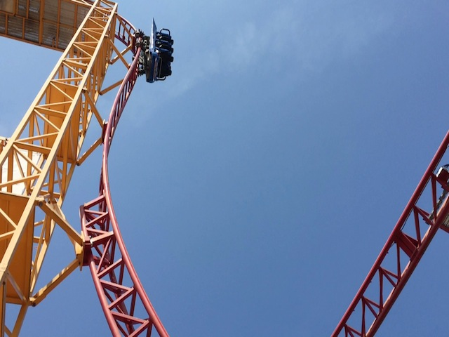
BEYOND 90 DEGREES!!!
Yeah. It looks really cool and twisty, but there's just something about it that while fun, just isn't that crazy.
Yeah. Dare Devil Dive is another one of those coasters that got the Virtual Reality treatment. And yeah. That really hurts operations. Though I did enjoy having one line for VR Riders and one for non-VR riders. Yeah, I liked the VR on New Revolution, but I also just enjoy riding the rides as they are. And I wanted to experience Dare Devil Dive as it is. So I didn't do the VR on it.
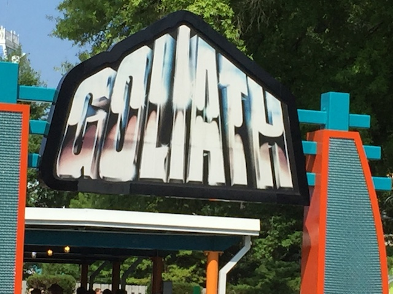
OK. Enough is enough. Let's do the best ride in the park. Goliath.
Yeah. There's no doubt about it. This is easily my favorite B&M Hyper.
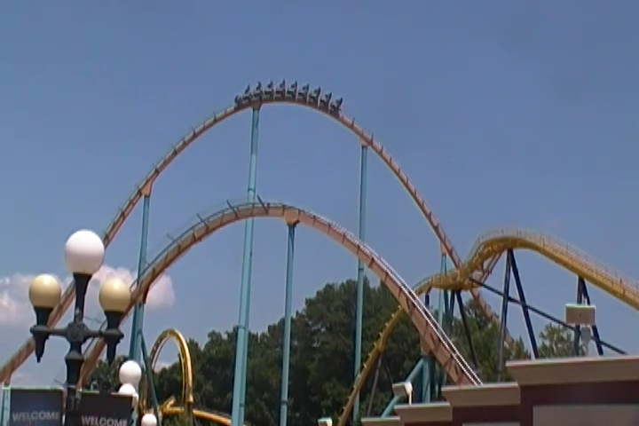
Aww. Isn't Georgia Scorcher so cute down there.
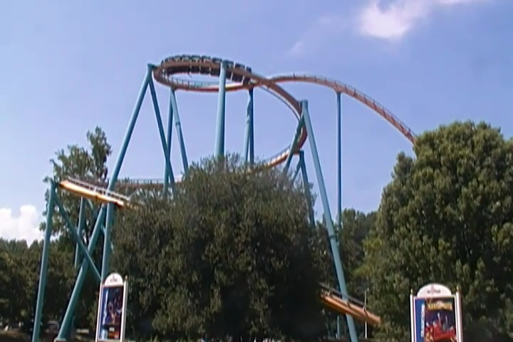
That downward helix is really good. Much better than the upward helix on Nitro.
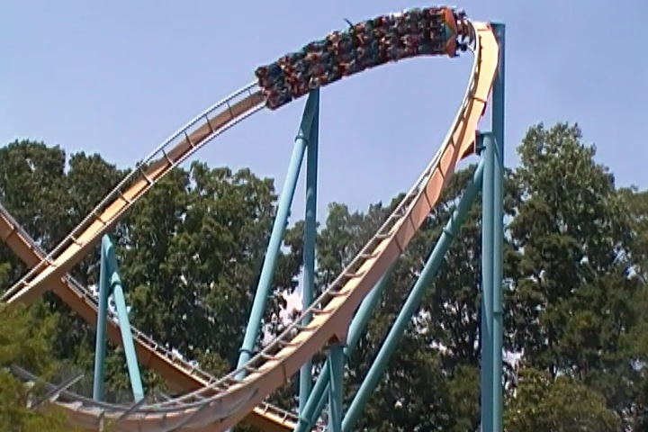
Love just how agressive Goliath @ SFOG is.
I'm just gonna say this. The Gotham City at Six Flags Over Georgia is fantastic. Easily the best Gotham City that Six Flags has.
Just take a look at what they did with their chairswings.
"Oh no! We can't ride the Super Loop! What a shame!" =)
Enough of the tour. We're here for Mindbender.
Oh, and while rides at Six Flags Over Georgia does have single rider lines, they unfortunetly are the worst kind, where you have to wait in 90% of the regular line and then you enter the single rider line. I F*CKING HATE THAT!!! There's no reason to do that!!! Well, at least Six Flags Over Georgia isn't crowded today, so we don't have to worry about that.
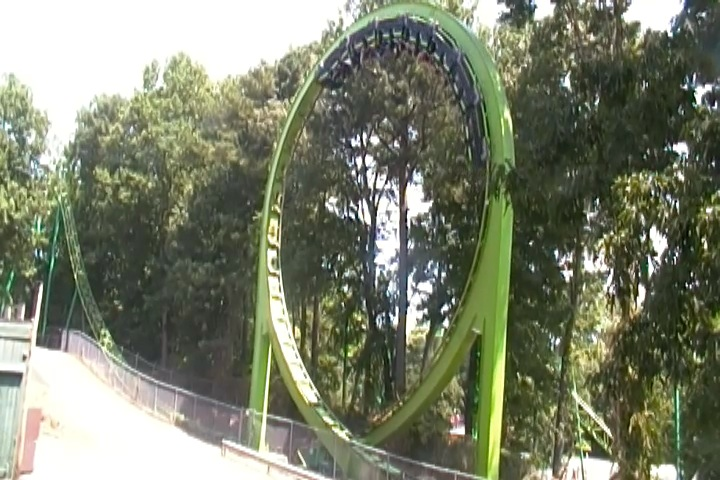
I can definetly say that Mindbender is freaking great. Powerful loops, ejector air, and much more.
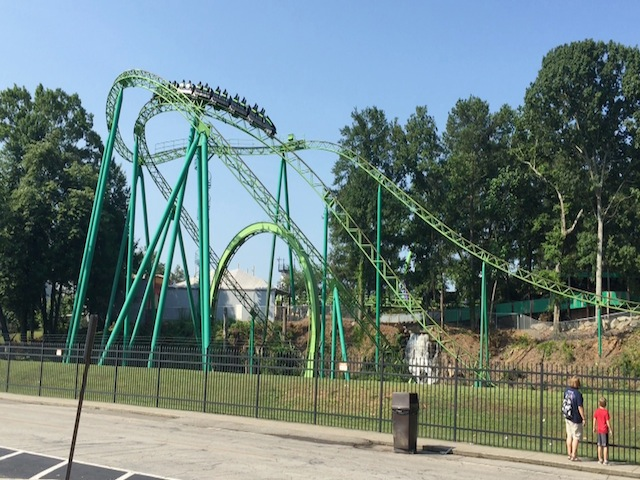
I know Mindbender has this dive drop and helix up that some will claim to be a 3rd inversion. What!? NO!!! NOT EVEN CLOSE!!!! Now I love this dive drop. It's a ton of fun, but don't fool yourself. That's no inversion.
Yeah. You're gonna get your ass glued to your seat at this point.
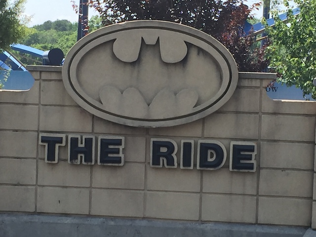
Another Six Flags Park. Another Batman the Ride clone.
But hey. This isn't just an ordinary Batman. It's the headless Batman the Ride!! =)
Warning. Idiots may be crossing here.
Hey. Might as well give the tilt a whirl a spin. It's running really good here.
Hmm. I don't think I've heard of this ride before.
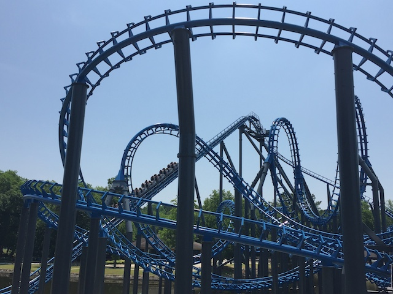
OH F*CK!!! IT'S NINJA!!!
I know nobody else in the coaster community would agree with me, but I actually liked this ride. I found it fun! You're going to see this on our Top 10 Underrated Coasters List.
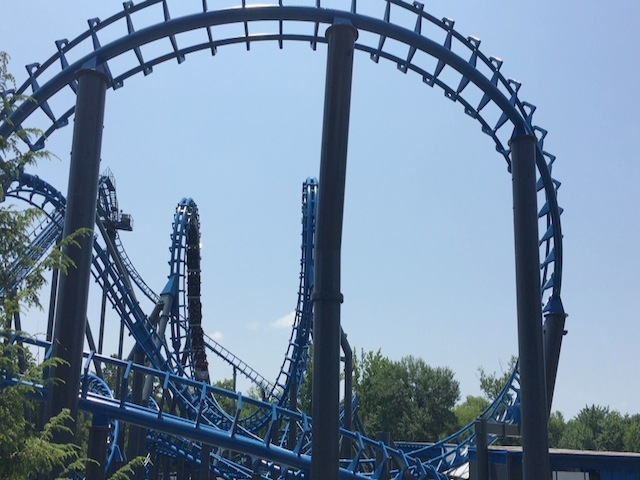
Yeah. There were a couple spots on the ride where you could tell there used to be some bad headbanging in a couple moments on the ride. But the new vest restraints managed to fix that.
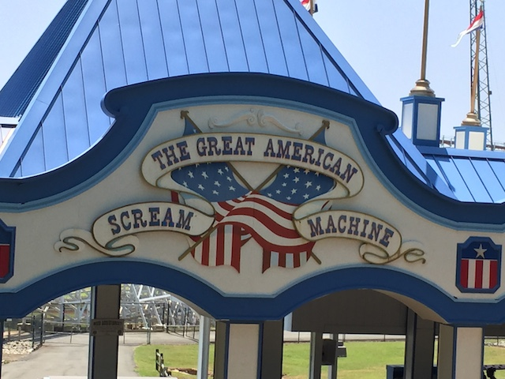
Up next is Great American Scream Machine, another seriously underrated coaster.
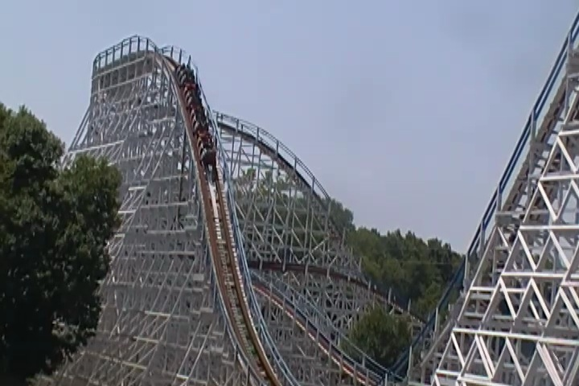
Seriously, there's some REALLY good airtime on this ride. Especially at the end.
Between this and Blue Hawk, I'd call this the underrated corner of the park.
F*ck!! Never mind!!
I may not be a big fan of these Superman: Ultimate Flight rides, but they're fun rides. Plus, this one has a tunnel. So it's the best one of the three (not saying much).
Yay!! I'm all done with all the Superman: Ultimate Flights!! =)
Considering how these bumper cars most likely had some bullsh*t One Way Rule, I won't miss them at all.
Might as well get the rest of the credits.
Yeah, it's a really good kiddy coaster. The only downside is the line. Seriously, this was the longest line we waited in all day.
Honestly, aside from the ending, this ride is just like the kiddy coaster we just rode.
Dude! We still have yet to ride Acrophobia!!
See. Godzillas not that big. =P
I know I rode a clone of this at Movie Park Germany 4 years ago, and it's just as amazing here. I really wish that more drop towers pushed the "OH SH*T!!!" button like these rides.
All right. This is the only coaster left for us to ride.
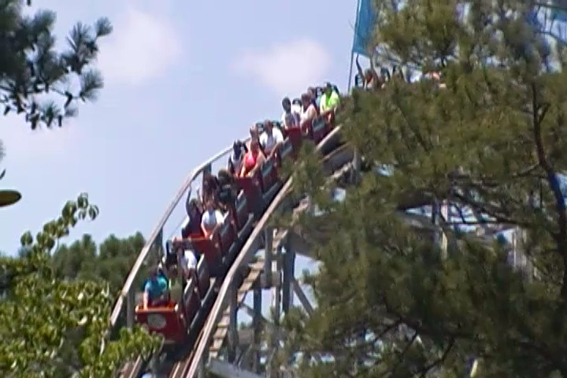
Honestly, I was really dissapointed with this ride. It was just super slow and sluggish.
I appreciate it not being brutal and trying to kill me, but it also wasn't that crazy bucking horse coaster I was hoping for.
Yeah, I know it's been a while since I've been to Chick Fil A. I temporarily boycotted them after the Dan Cathy homophobia controversy, but after really thinking about it, and how I still buy the products of companies that do much worse than Chick Fil A, I stopped boycotting and started going again. Though the boycott, while it didn't last, it did denormalize going for me as I used to go to Chick Fil A all the time, whereas I go very rarely now. I kind of forgot just how good it is. =)
Hey. Might as well take a reride on Georgia Scorcher since that ride kicks ass!
Georgia Scorcher is sponsered by lesiban sex. Best sponsership Six Flags has ever done =).
Yeah, there's nothing special about this log flume. But it's hot outside and the line is short. F*ck it!
Anyone up for another ride on Goliath @ SFOG.
Yeah. It may not be as intense as Fury 325, but do not just think this is yet another B&M Hyper.
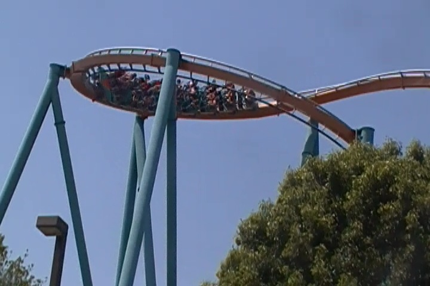
Seriously, this helix is really strong. I actually greyed out briefly on one of my rides.
And on top of great speed and nice laterals, it has a lot of really good airtime.
Seriously, just going into the brake run provides you with some really good ejector air.
Hey. They have a dark ride at Six Flags Over Georgia. And not just a dark ride, a unique and original dark ride. =)
So happy to see that desegregation has finally occured in the South and now humans and monsters can attend the same Monster Picnic. =)
F*ck it! I'll kiss anyone. Let's do it!
Best food in all of Six Flags Over Georgia.
The Devil Went Down to Georgia.
Yeah. I'd love to come back for another Monster Picnic (GAH!! NOW I HAVE THAT STUPID SONG STUCK IN MY HEAD!!!).
Love that they still have their skyride here. And hey, it's good for shots.
"Hey. You wanna ride a ride themed to driving, which we've been doing this entire trip and all the time in my normal daily life!? No? TOO F*CKING BAD!!!"
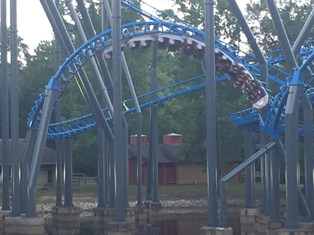
Yeah. I'm bothering to reride Ninja...I mean Blue Hawk. I genuinely like it.
I'm still dumbfounded how something that looks so evil and so similar to Gouderix, the worst coaster I've ever ridden, can be a decent ride!
Just a friendly little reminder on just how terrible a ride Gouderix is for comparison.
Hey! Let's do the Star Flyer!! Aww. The view is just of Georgia. That's not exciting.
Let's do some night time rides on Goliath. And hey, started to sprinkle towards the end.
I know there's not much time left, but hey. Might as well grab a couple Mindbender rides (Love how they're advertising that they're only running one train. Please do this at Georgia Scorcher as well. Or better yet, just run two trains).
Yeah. I don't think we're gonna have a problem with one train operations here.
Yeah. During our final couple Mindbender rides, it began to pour. HOLY CRAP!!! THOSE RIDES WERE AMAZING!!! Schwarzkoph + Rain = AWESOME!!!!
And finally, it's not a trip to the Deep South without stopping at Waffle House.
Really wish Waffle House would spread to the West Coast.
And that was our Deep South Trip. I got to experience a new part of the country I hadn't visited and went to several new parks, all of which I really liked. There were a lot of good coasters, and Fury 325 is a favorite of mine. Yeah, it was a bummer that Lightning Rod and Rampage were closed, but hey. That just means I have to go back. I still had a blast on this trip, I have almost all of the United States done, and I've got some good plans for the future that I can hopefully put into effect.